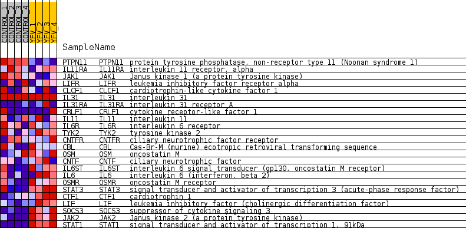
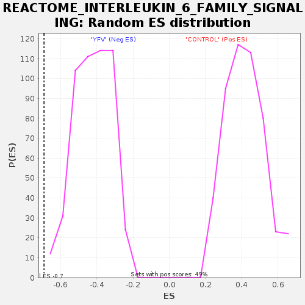

Profile of the Running ES Score & Positions of GeneSet Members on the Rank Ordered List
| Dataset | MATRIZ_GSE99081_collapsed_to_symbols.gsea_CLASE_99081.cls#CONTROL_versus_YFV |
| Phenotype | gsea_CLASE_99081.cls#CONTROL_versus_YFV |
| Upregulated in class | YFV |
| GeneSet | REACTOME_INTERLEUKIN_6_FAMILY_SIGNALING |
| Enrichment Score (ES) | -0.69163114 |
| Normalized Enrichment Score (NES) | -1.6507311 |
| Nominal p-value | 0.0 |
| FDR q-value | 0.048210885 |
| FWER p-Value | 0.778 |
| SYMBOL | TITLE | RANK IN GENE LIST | RANK METRIC SCORE | RUNNING ES | CORE ENRICHMENT | |
|---|---|---|---|---|---|---|
| 1 | PTPN11 | protein tyrosine phosphatase, non-receptor type 11 (Noonan syndrome 1) | 389 | 0.883 | 0.0426 | No |
| 2 | IL11RA | interleukin 11 receptor, alpha | 4337 | 0.217 | -0.1845 | No |
| 3 | JAK1 | Janus kinase 1 (a protein tyrosine kinase) | 5037 | 0.156 | -0.2158 | No |
| 4 | LIFR | leukemia inhibitory factor receptor alpha | 5283 | 0.131 | -0.2210 | No |
| 5 | CLCF1 | cardiotrophin-like cytokine factor 1 | 6703 | 0.026 | -0.3066 | No |
| 6 | IL31 | interleukin 31 | 8556 | 0.000 | -0.4208 | No |
| 7 | IL31RA | interleukin 31 receptor A | 9278 | -0.000 | -0.4653 | No |
| 8 | CRLF1 | cytokine receptor-like factor 1 | 9538 | -0.005 | -0.4809 | No |
| 9 | IL11 | interleukin 11 | 10305 | -0.045 | -0.5247 | No |
| 10 | IL6R | interleukin 6 receptor | 10427 | -0.053 | -0.5281 | No |
| 11 | TYK2 | tyrosine kinase 2 | 10673 | -0.073 | -0.5378 | No |
| 12 | CNTFR | ciliary neurotrophic factor receptor | 10855 | -0.089 | -0.5422 | No |
| 13 | CBL | Cas-Br-M (murine) ecotropic retroviral transforming sequence | 12092 | -0.202 | -0.6032 | No |
| 14 | OSM | oncostatin M | 12667 | -0.261 | -0.6188 | No |
| 15 | CNTF | ciliary neurotrophic factor | 13334 | -0.342 | -0.6341 | No |
| 16 | IL6ST | interleukin 6 signal transducer (gp130, oncostatin M receptor) | 13439 | -0.357 | -0.6136 | No |
| 17 | IL6 | interleukin 6 (interferon, beta 2) | 14705 | -0.542 | -0.6508 | Yes |
| 18 | OSMR | oncostatin M receptor | 14840 | -0.577 | -0.6155 | Yes |
| 19 | STAT3 | signal transducer and activator of transcription 3 (acute-phase response factor) | 15310 | -0.748 | -0.5881 | Yes |
| 20 | CTF1 | cardiotrophin 1 | 15350 | -0.764 | -0.5329 | Yes |
| 21 | LIF | leukemia inhibitory factor (cholinergic differentiation factor) | 15543 | -0.855 | -0.4803 | Yes |
| 22 | SOCS3 | suppressor of cytokine signaling 3 | 15669 | -0.939 | -0.4171 | Yes |
| 23 | JAK2 | Janus kinase 2 (a protein tyrosine kinase) | 16053 | -1.843 | -0.3018 | Yes |
| 24 | STAT1 | signal transducer and activator of transcription 1, 91kDa | 16215 | -4.153 | 0.0015 | Yes |

